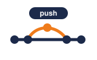
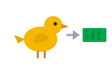
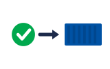
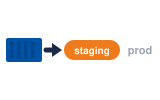
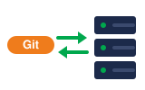

01CI · CIpush
Every push to main starts the CI pipeline.
រាល់ការ push ទៅ main ចាប់ផ្តើម CI pipeline។
CI/CD និង GitOps · ពីការ push កូដ ដល់ production ដោយស្វ័យប្រវត្តិ
កូដចូល Git ម៉ាស៊ីនធ្វើ test, build និង deploy។ Git ជាការពិតតែមួយ ហើយ cluster ធ្វើតាម Git។

Pipelinepush → test → build
Canaryសាកលើអ្នកប្រើតិចមុនតាមលំដាប់៖ push → test និង build → GitOps → canary → production។
Space listen · ← → move · K show text
Every push to main starts the CI pipeline.
រាល់ការ push ទៅ main ចាប់ផ្តើម CI pipeline។

CI runs the tests and builds a new image.
CI ដំណើរការតេស្ត និងសាងសង់ image ថ្មី។

CD deploys that image to staging first.
CD ដាក់ image នោះទៅ staging មុនគេ។
With GitOps, Git is the single source of truth.
ជាមួយ GitOps, Git គឺជាប្រភពការពិតតែមួយគត់។

A tool like Argo CD keeps the cluster the same as Git.
ឧបករណ៍ដូចជា Argo CD រក្សា cluster ឲ្យដូចនឹង Git។
To deploy, we merge a pull request instead of running commands.
ដើម្បី deploy យើង merge pull request ជំនួសឲ្យការវាយពាក្យបញ្ជា។
A canary release sends a little traffic to the new version first.
Canary release បញ្ជូនចរាចរណ៍បន្តិចទៅកំណែថ្មីជាមុនសិន។
If the numbers look bad, we roll back automatically.
បើលេខមើលទៅមិនល្អ យើង rollback ដោយស្វ័យប្រវត្តិ។
Now I can run my app on Kubernetes, from zero to production.
ឥឡូវ ខ្ញុំអាចដំណើរការកម្មវិធីលើ Kubernetes ពីសូន្យ ដល់ production។
Avoid it. GitOps will undo your change. Fix it in Git.
ជៀសវាង។ GitOps នឹងលុបការផ្លាស់ប្តូររបស់អ្នក។ ជួសជុលវាក្នុង Git។
ការខុសគ្នារវាង Git និង cluster ហៅថា drift។
No. Delivery needs a person to approve. Deployment goes live by itself.
ទេ។ Delivery ត្រូវការមនុស្សអនុម័ត។ Deployment ចេញផ្សាយដោយខ្លួនឯង។
អក្សរ CD អាចមានន័យទាំងពីរ សួរក្រុមថាពួកគេមានន័យយ៉ាងណា។
About ten minutes from push to staging.확인 필요 · checkcheck
ប្រហែលដប់នាទី ពី push ដល់ staging។
We open a pull request that changes the image tag for prod.
យើងបើក pull request ដែលប្តូរ image tag សម្រាប់ prod។
Traffic goes back to the old version automatically.
ចរាចរណ៍ត្រឡប់ទៅកំណែចាស់ដោយស្វ័យប្រវត្តិ។
Tap a word's play button to hear it. Hide one side, then recall it before you tap to check.
Q. Can I hotfix production with kubectl edit?
Q. ខ្ញុំអាចជួសជុលបន្ទាន់នៅ production ដោយ kubectl edit បានទេ?
A. Avoid it. GitOps will undo your change. Fix it in Git.
A. ជៀសវាង។ GitOps នឹងលុបការផ្លាស់ប្តូររបស់អ្នក។ ជួសជុលវាក្នុង Git។
Q. Is continuous delivery the same as continuous deployment?
Q. Continuous delivery និង continuous deployment ដូចគ្នាទេ?
A. No. Delivery needs a person to approve. Deployment goes live by itself.
A. ទេ។ Delivery ត្រូវការមនុស្សអនុម័ត។ Deployment ចេញផ្សាយដោយខ្លួនឯង។
Q. How long does the pipeline take?
Q. Pipeline ចំណាយពេលប៉ុន្មាន?
A. About ten minutes from push to staging.
A. ប្រហែលដប់នាទី ពី push ដល់ staging។
Q. How do we promote to production?
Q. យើងដាក់ទៅ production យ៉ាងដូចម្តេច?
A. We open a pull request that changes the image tag for prod.
A. យើងបើក pull request ដែលប្តូរ image tag សម្រាប់ prod។
Q. What happens if the canary fails?
Q. បើ canary បរាជ័យ តើមានអ្វីកើតឡើង?
A. Traffic goes back to the old version automatically.
A. ចរាចរណ៍ត្រឡប់ទៅកំណែចាស់ដោយស្វ័យប្រវត្តិ។
Can I get a review on my pull request?
អាចជួយ review pull request របស់ខ្ញុំបានទេ?
The pipeline failed. I'm checking why.
Pipeline បរាជ័យ។ ខ្ញុំកំពុងពិនិត្យមើលមូលហេតុ។
Say it in your head first, then tap the box to check.